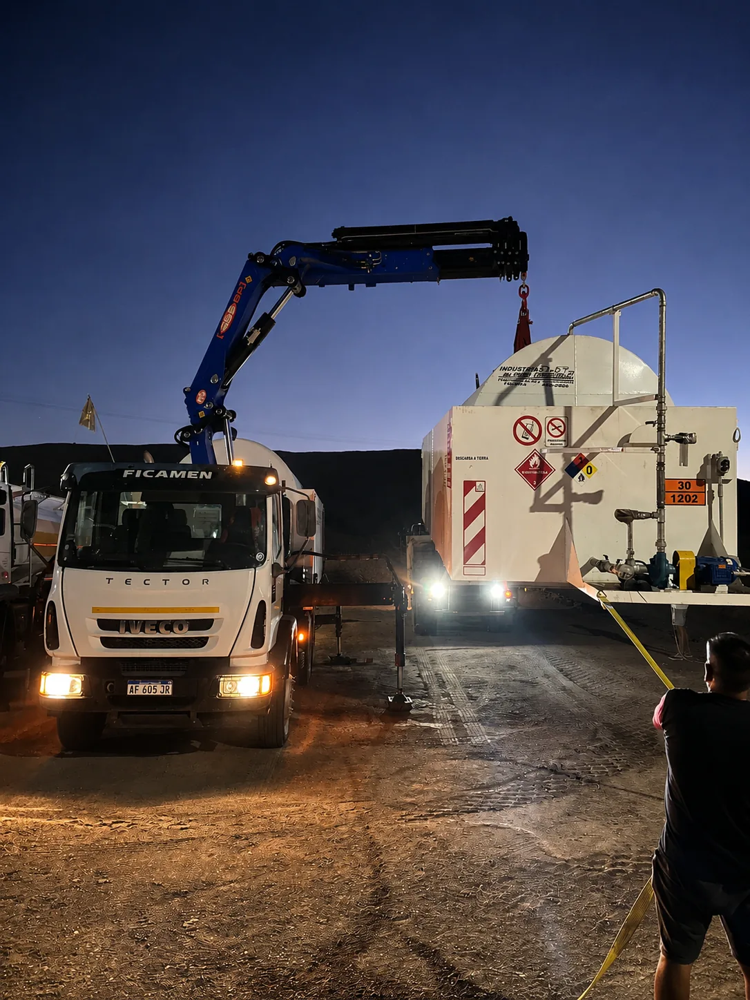
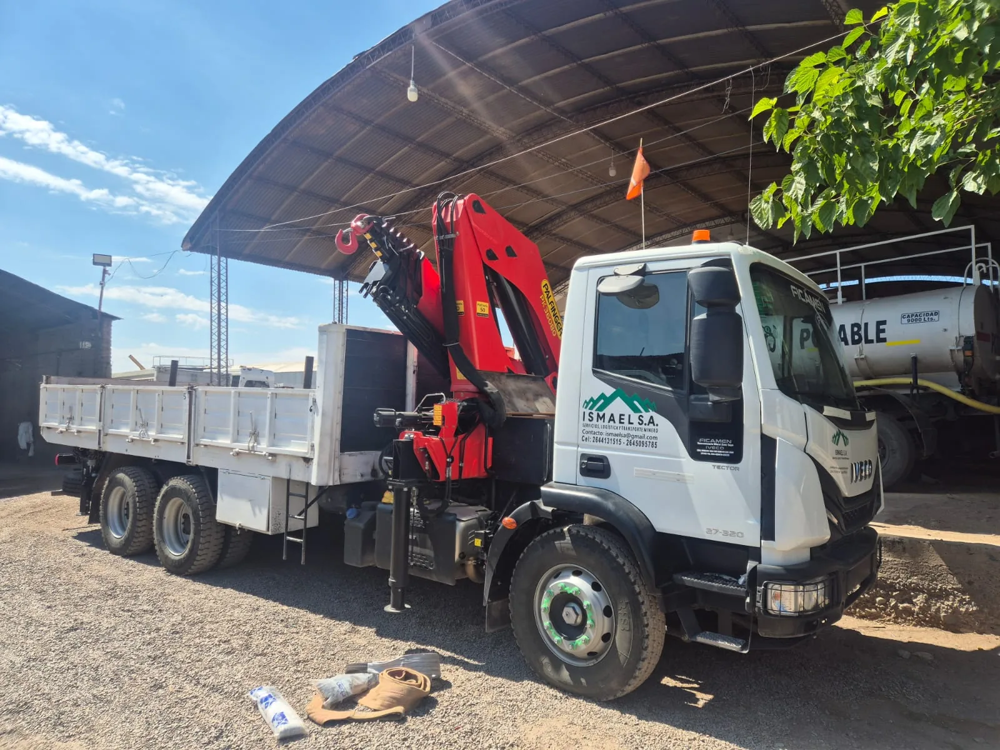
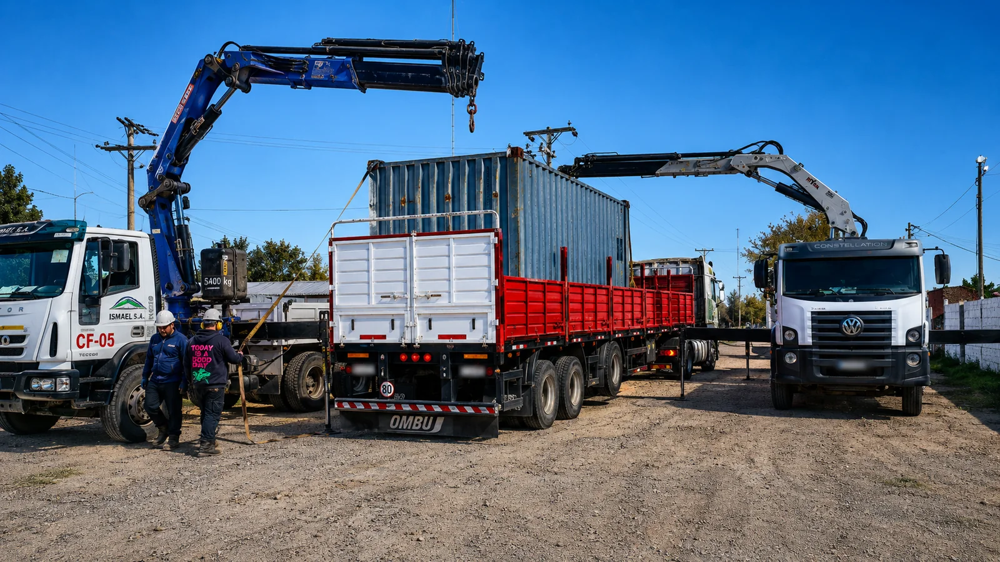

Hidrogrúas para minería en San Juan
Izaje resuelto en el mismo frente, sin esperas ni equipos de terceros. Hidrogrúas Palfinger propias, con operadores certificados, para carga, descarga y montaje de estructuras en los accesos más exigentes de la cordillera sanjuanina. Más de 20 años en alta montaña, con bases en Rawson y Calingasta.

Izaje y movimiento de cargas en el frente
En un proyecto minero, mover una carga pesada mal ubicada o sin el equipo adecuado es un riesgo de seguridad y una demora costosa. La hidrogrúa resuelve en el mismo lugar lo que de otra forma exigiría coordinar equipos externos: carga y descarga de unidades, montaje de estructuras y traslado de piezas dentro del frente.
ISMAEL S.A. opera hidrogrúas Palfinger montadas sobre camión propio —modelos 23500 y 36080, entre otras— con capacidad de acceder a los frentes de la Cordillera de los Andes y trabajar en las condiciones de altura y aislamiento propias de la minería sanjuanina. Cada maniobra de izaje la ejecutan operadores de hidrogrúa certificados. Al ser flota propia y operador local, controlamos la disponibilidad de cada equipo sin depender de terceros.

Grúas Palfinger montadas sobre camión
Trabajamos con hidrogrúas Palfinger sobre camión, una combinación que suma el alcance de la grúa a la autonomía del transporte: la misma unidad llega al frente, descarga y ubica la carga, sin necesidad de coordinar equipos por separado.
Es el equipamiento indicado para operaciones en caminos de montaña y puntos de difícil acceso, donde llevar una grúa convencional no es viable.
La grúa hace el trabajo pesado, en el momento
Izar un container o una estructura no es solo levantarla: es hacerlo con el ángulo, la eslinga y la señalización correctos. Nuestros operadores certificados manejan cada maniobra con la grúa montada en el mismo camión que trajo la carga.
Sin esperar a un tercero con el equipo adecuado: la unidad que transporta es la misma que descarga y ubica.

Para qué usamos la hidrogrúa en campaña
El servicio de hidrogrúas cubre las necesidades de izaje y movimiento de cargas de un proyecto, desde la logística de equipos hasta el montaje en el frente.
Carga y descarga de equipos
Movimiento de maquinaria, contenedores, módulos e insumos entre el transporte y el punto de operación.
Montaje de estructuras
Posicionamiento de módulos habitables, tanques, estructuras y componentes en el frente de trabajo.
Izaje en zonas de difícil acceso
Maniobras en caminos de montaña y puntos remotos donde una grúa convencional no llega.
Apoyo a perforación y obra
Asistencia de izaje a equipos de sondaje, campamentos y obras de infraestructura en terreno exigente.
La carga se mueve. La operación no espera.
Hidrogrúas propias con operadores certificados: carga, descarga y montaje resueltos en el mismo frente, sin coordinar equipos de terceros.
Por qué contratar la hidrogrúa con un operador sanjuanino
La diferencia entre un operador local y uno de otra provincia se mide en horas de movilización y en quién responde cuando el frente necesita mover una carga sin demora.
Grúas propias, con mantenimiento propio
Flota propia de hidrogrúas Palfinger. Si una unidad falla, sale otra: el izaje no se detiene.
Presencia local en San Juan
Bases en Rawson y Calingasta: movilización en horas, sin depender de operadores de otras provincias.
Operadores certificados en maniobra de izaje
Grueristas acreditados ante entes reconocidos por la OAA, con experiencia real en izaje de cargas en mina.
Seguros de izaje al día
ART, responsabilidad civil, seguro de carga y habilitaciones para maniobra de izaje.
+20 años en alta cordillera
Más de 20 años en rutas de montaña, frentes de perforación y proyectos de exploración en San Juan.
Trazabilidad de cada maniobra
Registro y monitoreo GPS de cada hidrogrúa: sabés dónde está la unidad y cuándo hizo el izaje.
¿Necesitás una hidrogrúa para tu proyecto?
Contanos la zona de operación, el tipo de carga y las fechas de campaña. Te respondemos con una propuesta concreta.
Ver todos los servicios →